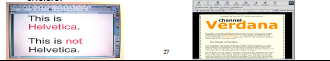
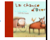
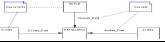

• Lors de la conception de sites Internet et Intranet, il est nécessaire de suivre plusieurs étapes logiques indispensables.
• Celles-ci nous servent à structurer notre démarche mais également à valider le projet étape par étape afin d'éviter tout problème ou remise en cause de l'application dans la suite des événements.
• La phase de conception doit être la plus exhaustive possible dans son contenu afin de faciliter la phase de production et ainsi éviter toute ambiguïté sur les fonctionnalités.
- La partie fonctionnelle : comment répondre aux besoins des collaborateurs de l'entreprise à travers le futur outil informatique.
- La partie technique : comment "traduire" les fonctionnalités en techniques informatiques et quelle plate forme informatique va "accueillir" l'application.
- de spécifications fonctionnelles
- d'une arborescence (si le projet en nécessite une)
- d'un schéma fonctionnel
- d'un storyboard le plus exhaustif possible.
-
• La partie technique se compose quant à elle :
- de spécifications techniques
- de spécifications d'architecture • ces deux parties doivent être réalisées ensemble.
• c'est à dire que les différents acteurs doivent s'échanger toutes les informations et discuter de la faisabilité des fonctionnalités.
• Il est donc recommandé d’éviter de construire des espaces contenant plus de 3 niveaux.
• Mais attention, cette règle ne doit pas être utilisée aveuglement.
• Si une fonctionnalité nécessite 4 ou 5 afin que l’utilisateur comprenne davantage le fonctionnement de celle ci, alors il est nécessaire d’écarter la règle des 3 clics.
• L’arborescence est totalement indépendante du média et des technologies utilisées.

Les différentes couleurs représentent les différents niveaux du site. A partir de cet exemple, nous pouvons remarquer l’agencement des rubriques et notamment de la dépendance des rubriques. Par exemple, la rubrique News (Rubrique de niveau 2 ou aussi appelée n-1) n’est accessible qu’en ayant cliqué sur Actualité (rubrique mère ou aussi appelée rubrique n) au préalable
• Le Schéma Fonctionnel a pour vocation d’organiser les rubriques entre elles, de hiérarchiser l’information et de déterminer les processus fonctionnels.
• Il peut être défini comme une cartographie fonctionnelle du site.
• Il permet de répondre à plusieurs questions :
- Quelles sont les fonctionnalités dans les rubriques ?
- A quoi renvoient-elles en termes techniques ?
- Quels sont les liens des fonctionnalités entre elles (certaines pages peuvent être reliées à plusieurs rubriques) ?
- Si la structure du site doit être dynamique, le Schéma Fonctionnel doit permettre de tester et de visualiser cette évolution et de quantifier les limites à partir desquelles.
• Il prend comme approche le point de vue fonctionnel et ergonomique de l’utilisateur.
• Il s’attache plus particulièrement aux fonctionnement des différentes rubriques entre elles et à leur relation au système d’information.
• A la différence de l’arborescence, il permet d’obtenir une vision globale du site.
• Le Schéma Fonctionnel ne prend pas en compte les choix technologiques mais peut y renvoyer.
• En effet, des choix ou des orientations fixées par le Schéma Fonctionnel découlent des contraintes de structure de page et de hiérarchie de contenu.

Le Storyboard • Le Storyboard correspond à une vue fonctionnelle détaillée des pages.
• Un Storyboard ne représente en rien une mise en page réelle ou une réalité graphique des pages mais s’attache à représenter tous les éléments ou zones informationnelles et/ou fonctionnelles.
• Il présente également les différentes interactions qui existent entre les éléments constitutifs d’un site.
• Le storyboard présente les navigations primaires, secondaires, tertiaires ainsi que les zones de recherche ou autre fonctionnalité.
• Contrairement à l’arborescence et au Schéma Fonctionnel, le Storyboard est directement impacté par les spécifications techniques et ergonomiques.
• Le Storyboard représente non seulement la fonction des éléments mais également leur type et l’utilisation de l’espace.
• Une boite de sélection est symbolisée comme un objet de type “ select box de formulaire ”.
Exemple d’une select box (boîte de sélection avec choix prédéterminés)
Le Storyboard •Une page contient une liste de résultats composée de trois colonnes, le Storyboard peut simplement représenter schématiquement la proportion des trois colonnes dans le tableau.
• Mais pour que ce tableau soit valide et réalisable, il est important d’indiquer la quantité de caractères à utiliser par ligne et par colonne.
• Ces quantités proviennent généralement des spécifications techniques ou du modèle de données.
• Il est en fait très important de savoir que la première colonne doit accueillir 12 caractères numériques, la seconde 40 caractères alphanumériques en majuscules et la troisième un pictogramme de taille connue.
• Ces informations ont une influence directe sur la faisabilité de la page.
• Tout site doit être développé sous une résolution d’écran. Le plus courant est le 800*600, ou encore le 1024*758.
Le Storyboard • Le Storyboard spécifie la présence ou non de Frames.
• Le Story-board sera donc utilisé par les différents intervenants lors de la réalisation des interfaces.
• Les graphistes l’utilisent comme références pour qualifier les différents éléments de la page.
• les ingénieurs l’utilisent comme référentiel fonctionnel au niveau client.
• les intégrateurs HTML comme référentiel fonctionnel et guide des différents éléments à intégrer.
• Tous les écrans d’un site n’ont pas à être représenté dans un Storyboard.


• Cette règle repose sur deux observations,
• la première concernant le temps limité que l’utilisateur accepte de passer avant de trouver ce qu’il cherche
• et la seconde sur l’étude de la mémorisation des chemins et de l’espace.
• l’accès à l’information doit être simple et direct.

Eléments d’ergonomie • Il est souhaitable de n’afficher à l’utilisateur que les rubriques auxquelles
il a accès afin de ne pas lui donner une impression de restriction ni qu’il ait la tentation
de cliquer surun lien inactif qui lui donnerait en retour un message d’interdiction.

• Il est préférable, dans ce cas, d’ajouter une page d’inscription ou de personnalisation détaillée
qui permet àl’utilisateur de gérer ses droits
et d’obtenir des explications sur l’accessibilité des différentes rubriques.
• Des fonctions d’aide contextuelle peuvent aussi permettre à l’utilisateur de prendre
connaissance des différentes possibilités ou options offertes dans
une page ou une rubrique. Eléments d’ergonomie • La cohérence externe touche à notre culture, notre environnement et nos habitudes.
• Un site ou une interface ne doit pas remettre en cause certains acquis ergonomiques, visuels ou culturels.
• Par exemple les trois couleurs verte, orange et rouge ont une signification spécifique.
• Une icône d’alerte bloquante ne devrait pas être verte mais plutôt rouge.

• De même les processus de navigation doivent être cohérents et fluide.
• Il est souvent préférable d’ajouter une étape à un processus de validation pour être certain que l’utilisateur ait
bien compris l’intégralité du processus et des informations.
Eléments d’ergonomie •L’information et le dialogue avec l’utilisateur est un point crucial;
il ne doit pas avoir l’impression d’être seul ou abandonné face à une interface,
un processus ou un chargement de page un peu long, l’utilisateur
doit connaître la progression du chargement.

• Dans le cas du chargement d’une page, un découpage différent de la page peut permettre l’affichage
de celle ci en plusieurs vagues lui permettant ainsi de commencer
à lire avant la fin du chargement.
• De même, la saisie ou la modification d’information qu’elle soit suivie ou
pas de confirmation doit donner lieu à un message de confirmation.

•L’utilisateur doit toujours comprendre ce qui se passe.
Eléments d’ergonomie • Il est souhaitable de prendre en compte le plus possible les utilisateurs ayant des
difficultés d’accès (mal voyants, non voyants, problèmes de mobilité, etc.).
• Cette prise en compte demande souvent un effort minimum lors de la réalisation des pages
(respect strict des normes) et rend à certains l’utilisation des Espaces
Web bien plus aisée.
• Un exemple très pratique est la bonne utilisation des propriété ALT des balises IMG afin de permettre
aux non voyants de comprendre les images qu’ils ne peuvent pas voir.
• Le W3C consacre une part importante de son activité à ce sujet (http://www.w3c.org).
sont destinés à “ faire passer une impression ”.
• Elle est couramment appelée “ look and feel ”.
• Son objectif principal est de faciliter la compréhension, la lecture et d’apporter une
cohérence au site par rapport à un enchaînement logique des différents écrans.
• Il a pour but de définir un ensemble de “ contraintes ” graphiques appelées :
codes graphiques, l’ensemble de ces codes constituent la charte graphique.
La Charte Graphique Une Charte graphique est composée et définie par les éléments suivants :
- Le jeu de couleur. Il permet :
1. De définir une ambiance : le choix de ces couleurs peut être déterminé en fonction de la
communication de l’entreprise et doit prendre en compte le niveau d’information.
2. D’imposer une, et une seule ergonomie à l’ensemble du site et de pouvoir codifier une
navigation cohérente sur le plan visuel .
• Des couleurs seront déterminées pour l’ensemble de l’application.
• Sur les boutons de navigation pour en
indiquer leur niveau de pertinence ou leur hiérarchie, • sur les titres,
• ainsi que sur certaines zones pouvant assurer différents niveaux d’informations.
La Charte Graphique - La typographie
• C’est sans doute un des éléments primordiaux constituant la charte graphique.
• Celle-ci est constituée de deux jeux de typo dont chaque jeux peut contenir plusieurs typos.
• L’ensemble de ces jeux ne doit pas (sauf cas particuliers) excéder cinq typos au total
pour ne pas perturber la lisibilité. Deux jeux dont :
1. Une typographie dite “ images ” appelée ainsi à cause de son format n’étant pas une police système,
cette police est traduite sous un format image .gif pour des raisons de poids.

• Cette typo doit être choisie pour un confort de lisibilité optimal.
• Une typo sans plein ni limites (Sérif type : Times, Garamond…) s’avère
être un choix judicieux en raison de son extrême lisibilité.
• Les titres, sous titres, et navigation peuvent être un choix de typographie
différent afin de segmenter/différencier l’information.
La Charte Graphique 2. Une typographie “ HTML ” : caractères tapés à même la
pageHTML et visibles sur tous les postes sans perturbation.
• Ces typos étant intégrées dans le système informatique et
présentes sur tous les ordinateurs.
• Ces caractères sont extrêmement limités en terme de
taille.
• Ils sont couramment au nombre de quatre ou cinq.
• Pour améliorer sensiblement l'accessibilité d'un site web, il
faut permettre le redimensionnement du texte, afin qu'il
s'adapte aux résolutions et aux paramètres des utilisateurs.
• Le texte html devrait être soit de l’Helvetica, soit du
Verdana .
• Cette dernière offrant un maximum de lisibilité pourrait être
choisie.

La Charte Graphique
- L’iconographie
• Elle est généralement composée de quatre éléments : les photos, les
pictogrammes, les illustrationset les graphiques.
• La photo est la technique qui permet de créer des images par
l'action de la lumière.

• Le pictogramme est un dessin qui traduit une idée par une scène figurée et
symbolique. Le dessin est schématique et destiné à signifier des indications
simples.

• L’illustration est une image ou peinture accompagnant un texte.

• Le graphique qui représente (quelqu'un ou quelque chose) par des lignes
ou des figures sur une surface.

• La surabondance de photos s’avère bien souvent un frein à
l’affichage de page en raison de la surcharge de poids
qu’entraînent celles-ci.
• Néanmoins l’emploi de photos permet bien souvent de donner
une âme au site et de le personnaliser
. • Les animations FLASH courantes sur des sites doivent être
dans le respect de la charte client mais on évitera au maximum
le développement de ces animations lors d’Internet car le temps
de chargement doit être maximal.
• Les écrans maîtres sont constitués de trois ou quatre
pages choisies sur l’ensemble de l’application en
fonction de leurs complexités et de leurs différences.
• Une page d’accueil ainsi que trois pages intérieures
permettent.
• de définir l’ensemble de la charte graphique ainsi
que sa structure,=.
• de poser l’ensemble de la navigation
• et de donner une cohérence et une lisibilité à
l’ensemble.
• Véritable entrée de l’application, elle doit imposer la
communication de l’entreprise et rendre évidente la
véritable fonction de l’application.
• Dans le cas d’un Internet, il est important d’établir une
relation entre l’utilisateur et l’application.
• L’utilisateur est chez lui, il est important qu’il se sente bien.
• Cette page doit établir une proximité de langage avec lui.
• Véritable lien entre l’entreprise et l’employé, la home
page est aussi un vecteur d’information à ne pas négliger.
• La home page doit être accueillante et source
d’information.
• Peuvent remonter en home page toutes sources
d’informations nécessaires pouvant créer une
proximité avec l’utilisateur (news, aide, information,
téléchargement de docs utiles, etc. ).
• Ainsi, la page d’accueil peut être un véritable trait
d’union entre la communication interne de l’entreprise
et l’utilisateur.
• Elle permet également d’établir la structure du site
ainsi que d’asseoir la navigation que l’on retrouvera
tout au long du site pour des raisons évidentes
d’ergonomie.
Exemple de deux pages d ’accueil pour le site de FORSENSE Consultants: